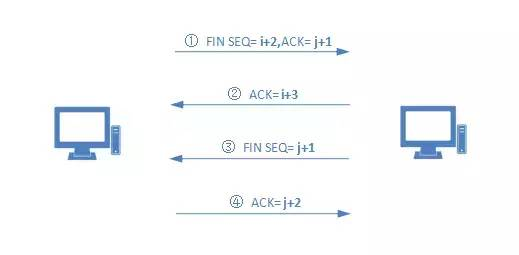

TCP/IP 协议族
Internet 的核心协议就是 TCP/IP，广泛应用于局域网和广域网，目前已有20+年发展史，是现用国际通行标准。TCP/IP 是个协议族，包含有多种协议，网络模型及分层如图所示
TCP/IP 五层网络模型
应用层：应用程序通过TCP/IP互联网络后发送、接受数据。选择所需服务类型，按照传输层要求组织数据，向下传递报文序列或字节流2种类型。
传输层：提供应用层间通信服务，又称端到端通信。提供可靠的数据传输服务，确保数据准确、有序送达目的地。数据发送后需对方回送确认信息，有丢失的数据需发送方重发分组。传输的对象是传输层分组。
网络层：又称IP层，负责机器间通信，接收到传输层请求后，向目的地传送信息分组。此分组会被封装进IP数据报中，由路由选择算法决定直送目的地或发给路由，然后将数据向下传递给网络接口层。接收到数据报时，检验正确性，由路由选择算法决定本地处理或转发，若目的地属于本机所在网络，就把数据报的报头剥去，选择适当的传输层协议向上传递分组。
连接层：又称数据链路层，处于TCP/IP协议层之下，负责接收IP数据报并将数据报通过选定网络发送出去
硬件层：处理连接网络的硬件部分。包括控制操作系统、硬件的设备驱动、NIC（Network Interface Card，网络适配器，即网卡），及光纤等 物理可见部分（还包括连接器等一切传输媒介）
TCP/IP 内含协议职责
TCP/IP 协议传输数据流程
传输控制协议（Transmission Control Protocol,TCP）是 Internet 传输层协议，提供面向连接的可靠传输服务，可靠性由重发技术保证。TCP 报文首部的大小一定是4字节的倍数，其中固定首部大小为20字节且不变
TCP 数据包示意图
ACK：确认位，当它的值为1时，确认号才是有效的
SYN：同步请求，TCP连接中连接双方协商初始的序号
RST：复位，TCP连接中数据传输发生异常需要重新发送
FIN ：通信结束后，当它的值为1时拆除连接
TCP 三次握手建立连接
第一次握手：建立连接时，客户端发送SYN包（syn=i）到服务器，并进入SYN_SEND状态，等待服务器确认。SYN表示同步序列编码（Synchronize Sequence Numbers）
第二次握手：服务器收到syn包，必须确认客户的SYN（ack=i+1），同时自己也发送一个SYN包（seq=j），即SYN+ACK包，此时服务器进入SYN_RECV状态
第三次握手：客户端收到服务器的SYN+ACK的包后，向服务器发送确认包ACK(j+1)，此包发送完毕，客户端与服务器进入ESTABLISHED状态，完成三次握手
TCP 正常数据传输过程
本图表示传输2个数据报的过程。主机A向B发送第一个 N 字节的数据包，SEQ为 i ，主机B收到后需要立即向主机A发送确认ACK包，ACK = i + N +1 ，这样主机A才可确认数据传输成功。第二个数据包传输时，SEQ数值 = R，主机B收到后立即回传ACK，此时ACK = R + N + 1，之后数据包传输的过程持续此流程，需要注意的是发送方只有收到目标方的确认包后才会清除缓冲区中的数据
ACK确认位 = SEQ数据编号 + 传递的字节数N + 1。第一个字节的SEQ编号由本地随机产生，SEQ+N的作用是为了让主机A确认发送给主机B的数据是否全部接收 / 是否出现丢失
TCP 数据重传与快重传
- 数据重传：主机A向主机B传送数据，但中间发生错误，主机B未能收到。经过一段时间后，主机A未收到主机B的ACK确认包，故主机A再次重传此数据包。主机A每次发送数据时都会启动一个定时器，规定时间没收到响应包则启动重传
- 快重传：重传发生在超时之后，但当主机A收到3个以上重复的ACK，其实就说明有数据丢失，也需要重传，此时重传定时器还没有结束，所以叫快速重传
TCP 四次挥手结束连接
第一次挥手：客户端发送一个FIN，用来关闭客户端到服务器的数据传送，客户端进入FIN_WAIT_1状态
第二次挥手：服务端收到FIN后，发送一个ACK给客户端，确认序号为收到序号+1（与SYN相同，一个FIN占用一个序号），服务端进入CLOSE_WAIT状态
第三次挥手：服务端发送一个FIN，用来关闭服务端到客户端的数据传送，服务端进入LAST_ACK状态
第四次挥手：客户端收到FIN后，客户端进入TIME_WAIT状态，接着发送一个ACK给服务端，确认序号为收到序号+1，服务端进入CLOSED状态，完成四次挥手

IP 协议数据传输流程
网络协议（Internet Protocol,IP）通常被认为提供的是无连接和不可靠的，但实际上，在网络性能良好的情况下，IP传送的数据能够完好无损的到达目的地
无连接是指没有确定目标系统是否已做好接收数据的准备之前就发送数据。不可靠是指目的系统不对成功完成接收到的分组进行确认
IP 发送数据
发送数据时，源计算机上的IP协议需要确定目的地是否在同一网络，若目的地在同一网络，使用直达通信，若不在同一网络，则需要通过网关或路由器完成通信：
主机A组装目的IP地址为主机B的数据报，之后进行路由选择，再将次数据报发送至默认路由器（由APR地址解析确定路由器，得到下一默认路由器IP地址与MAC地址的映射关系，然后以该MAC地址为帧的目的地址形成一个帧，并将IP数据报封装在帧的数据区，最后由具体的物理网络（以太网）完成数据报的真正传输）
IP 转发数据
路由器接收到主机A的数据帧后，去掉帧头并对其进行处理，发现此数据报的目的地非本地，需要将其转发，由路由选择算法及本地路由表确定下一跳路由器地址，通过ARP地址解析确定下一跳路由的IP地址与MAC地址的映射关系后，将该MAC地址作为数据帧的目的地将数据报封装为数据帧，通过以太网完成数据转发。重复此步骤直到第N个路由器与目的地直连，通过ARP地址解析确定目的主机的IP地址与MAC地址的映射关系，利用该MAC地址作为帧的目的地址，将IP数据报封装成帧，并由以太网实现数据的真正传递
IP 接收数据
主机B接收到数据帧后，解封该帧并对其进行处理，确定本机即为目的地址后，将数据报中封装的数据交由上层协议进行处理，随即逐层处理并上交直到应用层，完成此次通信
总结
TCP/IP 五大重要特性
逻辑编址：通过IP地址+主机ID，确保计算机可寻
路由选择：通过网络路径选择协议，确保数据包到达目的地
域名解析：将域名映射为IP地址，使用域名一是便于记忆，二是域名相对固定不变
错误检测：确保分组交换的可靠性传递，确认数据正常接收
流量控制：监测网络流量，防止网络拥塞出现